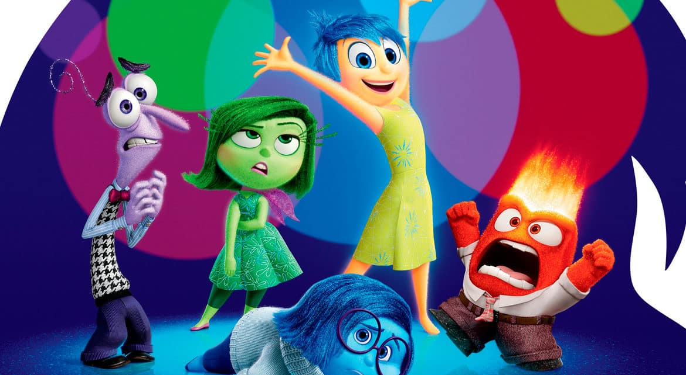
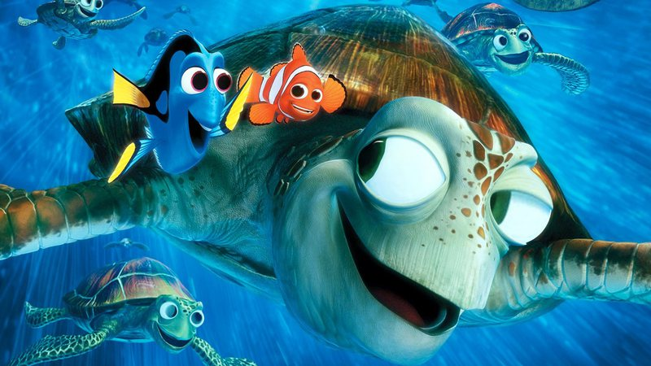

Aqui você irá encontrar os melhores filmes já vistos. Você irá se emocionar, se assustar e se divertir.
Se você gosta de novidades, fatos curiosos, histórias marcantes e diversão. Você está no local certo!
A sessão cinema começou...
Aqui você irá encontrar os melhores filmes já vistos. Você irá se emocionar, se assustar e se divertir.
Se você gosta de novidades, fatos curiosos, histórias marcantes e diversão. Você está no local certo!
A sessão cinema começou...
Um filme que te deixará de "boca aberta" no decorrer dos acontecimentos e que te fará repensar sobre a tecnologia e suas artimanhas.
Clique aqui para saber mais sobre o filme.
Este filme te fará chorar de emoção e te deixará com o coração quentinho. Já prepara o lenço e dê o play.
Clique aqui para saber mais sobre o filme.
Um filme sobre a revolucionária história de como surgiu a programação. Você se surpreenderá com o quanto a tecnologia mudou de lá até aqui.
Clique aqui para saber mais sobre o filme.
Este filme te fará repensar em seus atos e aprender a lidar com seus sentimentos. Prepare a pipoca e o coração.
Clique aqui para saber mais sobre o filme.

A história de um pai que enfrenta o misterioso mundo das águas para encontrar seu filho que se perdeu. Você se emocionará em cada minuto deste filme.
Clique aqui para saber mais sobre o filme.

A incrível história do grupo que revolucionou o mundo da música e conquistou corações por todo o mundo. Em apenas 8 meses, eles conseguiram chegar onde nem eles mesmos acreditavam.
Clique aqui para saber mais sobre o filme.